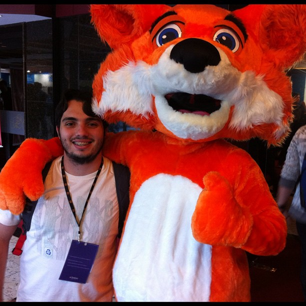
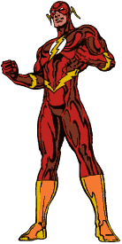
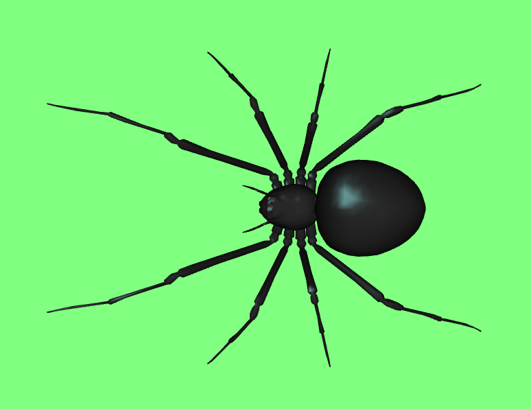
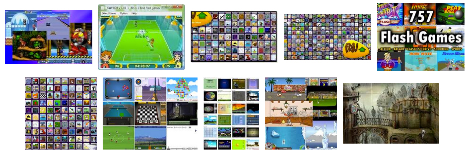
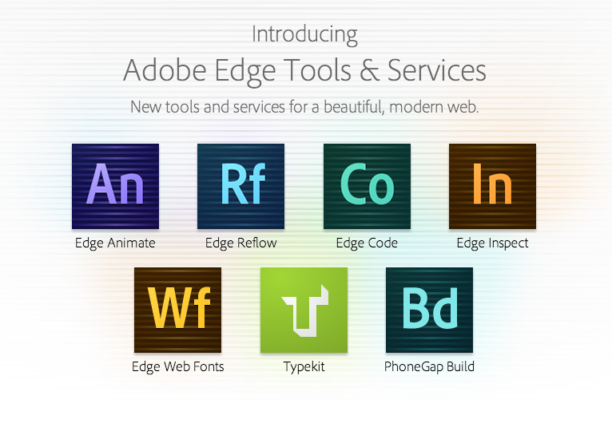
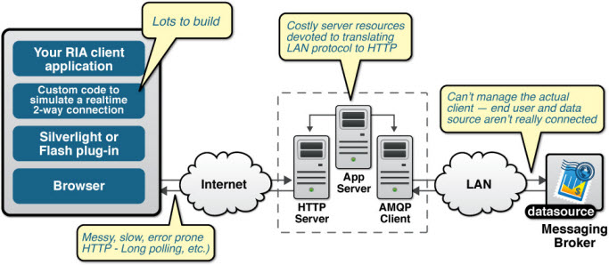
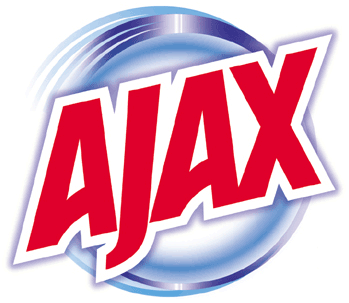
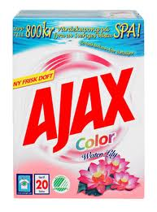
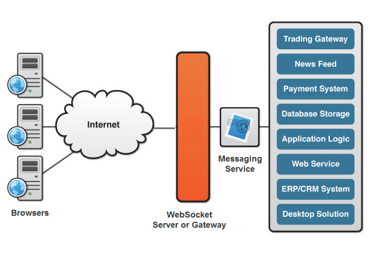

Game JS
com Websockets
@djalmaaraujo - Liferay
Quem sou eu?
- Sistemas para internet (Faculdade Marista/PE)
-
Contribuições:
- jQueryBrasil.org
- YUI Library (YAHOO!)
- AlloyUI
- github.com/djalmaaraujo
!= Herbalife
Games com Flash JS
Mitos
Flash vai morrer?
Sei lá, o mundo acaba em 2012?
Provavelmente NÃO!
por muitos anos..
Javascript substitui 100% o Flash?
Depende do que você está fazendo..
Provavelmente SIM! Mas..
Depende do que você está fazendo..
GPU vs CPU
O Flash é renderizado pela GPU
O Javascript é renderizado pela CPU
E agora javascript?
WEBGL
- 3D + Browser
- Processamento na GPU, direto na placa de vídeo
-
Muito melhor!
WEBGL é o fraco..
Spider
WEBGL é o fraco..
http://www.kamibu.com/demos/cloth-simulation/ http://www.unid.me/demo/vectorstream/ http://www.webdev20.pl/skins/default/js/demos/3d_grapher/webgl_ploter.html http://robchadwick.com/TerrainEditor/99% dos Jogos em Flash existentes poderiam ter sido feitos em javascript em muito menos tempo
Mas na mão? Na tora?
SIM!
Sem provavelmente..

Engines em Javascript
Fazendo muito mais
sem reinventar a roda!
- Cross-browser
- Canvas or DOM
- Sprite map support
- Collision detection
- Sounds, animations, effects and other sexy
- FREE
- Cross-browser
- Great mobile support
- Debug tools
- $99
- Games em 2D
- Last features of HTML5 for performance
- Perfect for physics stuff
- FREE
- Fast
- Touchscreens events
- Search for native-experience
- FREE
Adobe Edge Tools & Services
New tools and services for a beautiful, modern web.
Edge Animate
Mas afinal..
E WebSocket?
Que agonia é essa?
Primeiro..
Jogos em AJAX
- Muitos requests
- Load alto do servidor
- Tempo de reposta alto
- Protocolos indevidos para certos tipos de comunicação
Modelo padrão para aplicações AJAX
Alternativas para jogos real-time
- Adobe® Flash® Socket
- AJAX long polling
- AJAX multipart streaming
- Forever Iframe
- JSONP Polling
WebSockets
Pega o AJAX..


E coloca ele pra fazer o que ele faz de melhor..
WebSockets
WebSocket represents the next evolutionary step in web communication compared to Comet and Ajax
Comparativo entre Websockets e Polling quanto ao uso desnecessário da rede

WebSockets
Então eu posso...
- Me comunicar em tempo real
- Ter meus usuários conectados entre-si
- Transmitir dados rapidamente via JSON
- Enviar/Receber requisições tanto do servidor como do usuário ao mesmo tempo
E se unirmos algumas ferramentas + WebSockets para fazer um jogo?
Game JS
com Websockets
@djalmaaraujo - Liferay
Boa noite, vamos iniciar..
O que usar?
Ferramentas para um jogo com WebSockets + Javascript + Interatividade
NodeJS
Javascript no servidor
Você não precisa de outra linguagem que não seja Javascript.
Faça tudo com a mesma sintaxe!
HTTP Server/Alta concorrência/Banco de dados/Eventos/Rotas/Frameworks
Socket.IO
The cross-browser WebSocket for realtime apps
O grande protagonista da noite!
WebSockets/Tempo reals/Agilidade/Ótima API/Fall-backs/Interatividade
Socket.IO
Criando um servidor
var app = require('http').createServer(handler)
, io = require('socket.io').listen(app)
, fs = require('fs')
app.listen(80);
function handler (req, res) {
fs.readFile(__dirname + '/index.html',
function (err, data) {
if (err) {
res.writeHead(500);
return res.end('Error loading index.html');
}
res.writeHead(200);
res.end(data);
});
}
io.sockets.on('connection', function (socket) {
socket.emit('news', { hello: 'world' });
socket.on('my other event', function (data) {
console.log(data);
});
});
Socket.IO
Utilizando no cliente
var socket = io.connect('http://localhost');
socket.on('news', function (data) {
console.log(data);
socket.emit('my other event', { my: 'data' });
});
Javascript
Estudar Padrões / Frameworks / Bibliotecas / WEBGL / Canvas
Como anda o mercado de jogos em javascript?
Então.. como eu devo fazer meu jogo?
Como você desejar...
- Pode utilizar uma engine ou não
- Pode ter várias fases ou não
- Pode até não ter websocket
Crie e divirta-se com sua própria criação..
Let's play?